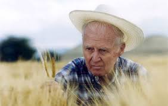
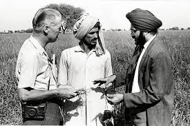
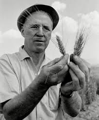
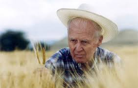
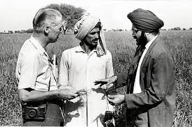
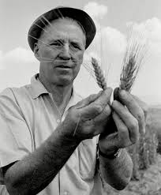
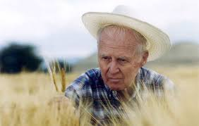
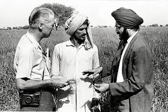
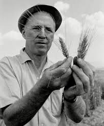

"Dr. Norman Borlaug"
 





The Father of the Green Revolution
Norman Ernest Borlaug ( March 25, 1914 – September 12, 2009)
was an American agronomist who led initiatives worldwide that contributed to the extensive increases in agricultural production termed the Green Revolution.
Borlaug was awarded multiple honors for his work, including the Nobel Peace Prize, the Presidential Medal of Freedom and the Congressional Gold Medal.
Borlaug received his B.S. in forestry in 1937 and Ph.D. in plant pathology and genetics from the University of Minnesota in 1942. He took up an agricultural research position with CIMMYT in Mexico, where he developed semi-dwarf, high-yield, disease-resistant wheat varieties. During the mid-20th century, Borlaug led the introduction of these high-yielding varieties combined with modern agricultural production techniques to Mexico, Pakistan, and India. As a result, Mexico became a net exporter of wheat by 1963. Between 1965 and 1970, wheat yields nearly doubled in Pakistan and India, greatly improving the food security in those nations.
Borlaug was often called "The Father of the Green Revolution", and is credited with saving over a billion people worldwide from starvation. According to Jan Douglas, executive assistant to the president of the World Food Prize Foundation, the source of this number is Gregg Easterbrook's 1997 article "Forgotten Benefactor of Humanity." The article states that the "form of agriculture that Borlaug preaches may have prevented a billion deaths."[11] He was awarded the Nobel Peace Prize in 1970 in recognition of his contributions to world peace through increasing food supply.
Later in his life, he helped apply these methods of increasing food production in Asia and Africa.



The Father of the Green Revolution
Norman Ernest Borlaug ( March 25, 1914 – September 12, 2009)
was an American agronomist who led initiatives worldwide that contributed to the extensive increases in agricultural production termed the Green Revolution.
Borlaug was awarded multiple honors for his work, including the Nobel Peace Prize, the Presidential Medal of Freedom and the Congressional Gold Medal.
Borlaug received his B.S. in forestry in 1937 and Ph.D. in plant pathology and genetics from the University of Minnesota in 1942. He took up an agricultural research position with CIMMYT in Mexico, where he developed semi-dwarf, high-yield, disease-resistant wheat varieties. During the mid-20th century, Borlaug led the introduction of these high-yielding varieties combined with modern agricultural production techniques to Mexico, Pakistan, and India. As a result, Mexico became a net exporter of wheat by 1963. Between 1965 and 1970, wheat yields nearly doubled in Pakistan and India, greatly improving the food security in those nations.
Borlaug was often called "The Father of the Green Revolution", and is credited with saving over a billion people worldwide from starvation. According to Jan Douglas, executive assistant to the president of the World Food Prize Foundation, the source of this number is Gregg Easterbrook's 1997 article "Forgotten Benefactor of Humanity." The article states that the "form of agriculture that Borlaug preaches may have prevented a billion deaths."[11] He was awarded the Nobel Peace Prize in 1970 in recognition of his contributions to world peace through increasing food supply. Later in his life, he helped apply these methods of increasing food production in Asia and Africa.